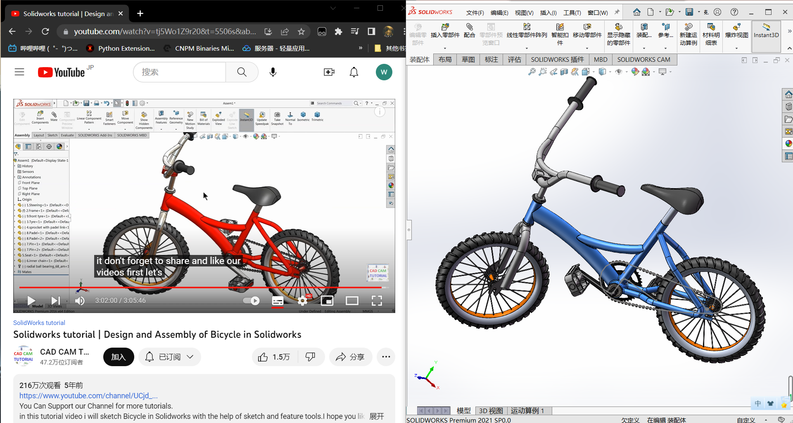
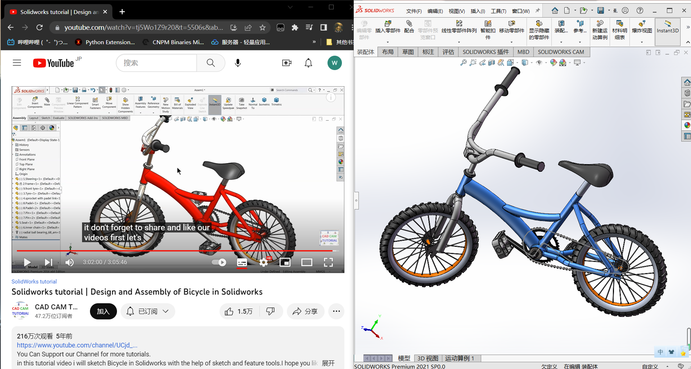
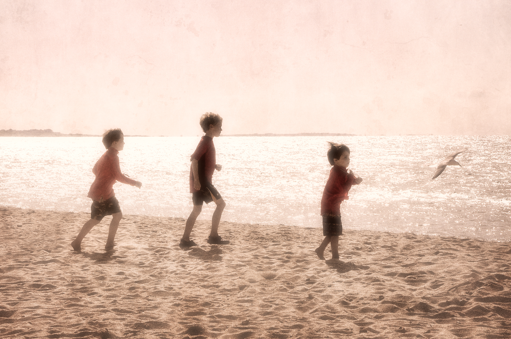

时间轴
Blog Post 1
Posted on December 28, 2022
这是我第一个完整的建一个3维模型，耗时22个小时，虽然花了这么长的时间，但是通过这次练习，我深刻体会到了用SolidWorks建模的精髓了，同时也较为熟练的掌握了SolidWorks软件的使用，总结了许多技巧与不足。最后，我想说的是，英语是真的重要，所以以后我会更多地听英文教程，一边学习，一边提高英语水平。
Posted on December 28, 2022
这是我第一个完整的建一个3维模型，耗时22个小时，虽然花了这么长的时间，但是通过这次练习，我深刻体会到了用SolidWorks建模的精髓了，同时也较为熟练的掌握了SolidWorks软件的使用，总结了许多技巧与不足。最后，我想说的是，英语是真的重要，所以以后我会更多地听英文教程，一边学习，一边提高英语水平。
1、51单片机入门教程江科协的看完并真正理解并能应用；
2、SolidWorks学习，能够做出一个有难度的物体出来；
3、学英语，坚持记单词，做试卷，听听力，争取能听懂YouTube上的英文教学视频。
莫等闲，白了少年头，空悲切。--岳飞

“You can overcome anything, if and only if you love something enough.”（你可以克服任何事情，如果且只要你夠熱愛一件事。）--Lionel Messi, Soccer Player

生活最沉重的负担不是工作，而是无聊。--Romain Rolland

Cease to struggle and you cease to live.（生命不止,奋斗不息）--Thomas Carlyle

只会学习不会玩,聪明的孩子也变傻。玩就好好的玩玩是人生最大的乐趣。
玩得开心，过得愉快！